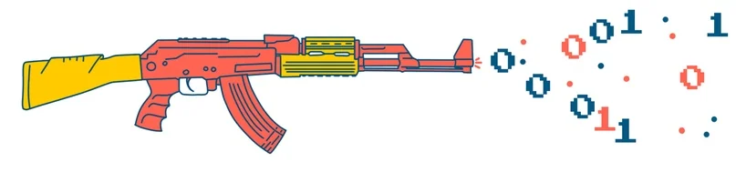
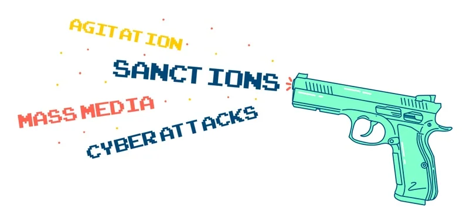

Александр Сорге — о том, почему в войне нового поколения не нужны ни полчища штыков, ни боевые колдуны
Вот и начался любимый период всех отчисленцев и прочих спермобаков, не достигших кризиса среднего возраста, — весенний призыв. Видимо, в связи с этим Министерство обороны не преминуло напомнить о себе, обрадовав нас сразу двумя фееричными новостями. Первая состоит в том, что в армии России, оказывается, служат сильнейшие боевые архимаги, которые на расстоянии умеют читать документы в закрытых натовских сейфах и чуть ли не дематериализовывать вражескую технику силой мысли. Ну а вторая — в том, что Ваню Дремина, великого русского поэта под псевдонимом Лицо, не возьмут в армию из-за партаков на этом самом лице. Видать, татуха Hate под правым глазом будет мешать смотреть в прицел винтовки, а Love под левым — блокировать энергию Чи, такую нужную при прочтении документов во вражьих сейфах. Все это, конечно, забавно, но правда в том, что облик войны изменился, и в современном сражении и полчища штыков, и даже боевые колдуны играют далеко не ведущую роль.
Асимметрия
В последнее время стало модным обсасывать тему "войны нового поколения", используя при этом два загадочных термина, которые довольно активно плавают в отечественном медиапространстве. Все слышали про таинственный "асимметричный конфликт" и совсем уж зловещую "гибридную войну", которая опутала своими щупальцами чуть ли не каждого россиянина. Эти понятия часто смешивают, однако это не совсем правильно.
Все мы примерно знаем, что такое классический, или симметричный, военный конфликт. И если его можно представить как боксерский поединок Рокки Бальбоа и Ивана Драго, то асимметричный конфликт — это если бы против Сталлоне на ринг вышел какой-нибудь щуплый рисовый фермер. Фермер, который с размаху зарядил бы этому Рокки коленом в пах, ведь он на сохе вертел все эти ваши правила бокса.
Асимметричный конфликт — это не только столкновение противников в разных весовых категориях, но и столкновение различных стратегий и тактик: эдакий геополитический ММА. Например, вы можете ввести регулярные войска в одну маленькую, но очень гордую республику, пообещав взять ее столицу "двумя десантными полками". А та, вместо того чтобы дать генеральное сражение, ответит вам партизанщиной и мешками сахара в подвалах рязанских домов — это пример классического асимметричного конфликта.
Самое интересное, что победителем из такого асимметричного противостояния часто выходил именно Давид, а не Голиаф. Вьетнам, Афганистан, гражданские войны или войны за независимость, будь то Алжир или конфликты в Юго-Восточной Азии, наглядно доказали, что даже огромная государственная машина может забуксовать перед кучкой повстанцев. Вторая половина XX века принесла осознание, что военная мощь играет далеко не главную роль в локальном конфликте. Да, армия может разбомбить города, выжечь напалмом джунгли и размозжить сапогом черепа противников. Однако это — далеко не залог победы. Несмотря на техническое и количественное превосходство, Советы ушли из Афганистана ни с чем, точно так же, как и Штаты из Вьетнама, получив лишь звонкую геополитическую пощечину и сотни "цинков". Да, они не понесли существенных военных потерь. Но и не смогли добиться поставленной цели — навязать противнику свою волю.
Стало понятно: чтобы вымыть сапоги в Индийском океане, больше недостаточно полчищ штыков и танковых клиньев, как бы ни была крепка их броня. А разросшийся ядерный клуб сделал любые разговоры о шапкозакидательстве просто смехотворными. Опыт асимметричного противостояния оказался слишком ценным, чтобы его не впитали полководцы разных стран: зачем ввязываться в большую драку, да еще и официально, если можно вести войну чужими руками. Тихонько подкармливать нужные группировки, посылая им стингеры. XXI же век показал, что асимметричные инструменты ведения боевых действий можно успешно использовать наравне с традиционными: пока регулярная армия занимается охраной портов и аэродромов или же просто держит границу на замке, наемники делают всю грязную работу, а сепаратисты, прошу прощения — ополченцы, выравнивают линию фронта.
Гибридный конфликт — это и есть сочетание классических, симметричных технологий ведения войны: танковых клиньев, кавалерийской атаки и ковровых бомбардировок, с методами асимметричными: прокси-войнами, герильей и террором. Но конфликт — не война. Бряцание оружием — лишь элемент зловещей гибридной войны, причем не самый важный.

Гибридизация
Дотянуться до противника через узкую дырку горячей точки подчас очень сложно. Именно поэтому во все времена всякие короли и прочие ампираторы стремились использовать в военных действиях помимо стали золото или пропагандистские листовки. Например, многие завоеватели любили не только тыкать соперника копьем, но и поднасрать ему в казну.
Самым простым способом саботажа экономики противника было фальшивомонетничество. Еще Наполеон Бонапарт печатал поддельные российские ассигнации во время похода на Москву. Человек-торт старался так сильно, что после войны фальшивок обнаружилось на 70 миллионов больше, чем оригинальных купюр. Но больше всего прославились нацисты, наладив подпольное производство первоклассных английских фунтов в ходе операции “Бернхард”.
В XX веке излюбленными инструментами давления стали дипломатия и шпионаж. Ну а новая эпоха с ее повсеместной цифровизацией и глобализацией заново открыла экономический и информационный фронты. Изменился масштаб: если раньше методы экономического, политического, психологического или информационного давления были скорее вспомогательными, то теперь они стали основными. Концепция гибридного противостояния витала в Вашингтонском обкоме еще в начале нулевых и окончательно оформилась благодаря военному теоретику Франку Хоффману.
Хоффман видел войну нового поколения, как смесь военных и невоенных боевых действий: одной рукой втягивать противника в гибридный военный конфликт, а другой — атаковать его невоенными методами: астротурфингом, экономическими санкциями, кибератаками, массовой пропагандой через интернет и СМИ, политическим шантажом.
Но развила идеи гибридной войны "Доктрина Герасимова" — статья "Ценность науки в предвидении" начальника российского Генштаба. Вобрав в себя идеи Евгения Месснера и его концепции "мятежвойны", доктрина перевернула само представление о межгосударственном конфликте.
"В прежних войнах важным почиталось завоевание территории. Впредь важнейшим будет почитаться завоевание душ во враждующем государстве. Воевать будут не на двухмерной поверхности, как встарь, не в трехмерном пространстве, как было во времена нарождения военной авиации, а в четырехмерном, где психика воюющих народов является четвертым измерением... Воевание повстанцами, диверсантами, террористами, саботажниками, пропагандистами примет в будущем огромные размеры".
Если раньше война представлялась как продолжение политики, то в сознании Герасимова политика — это продолжение войны. И не только политика — любая сфера жизни общества должна быть подчинена интересам бога войны, Марса. Поэтому "первая гибридная" ставит под ружье не только солдат, разведчиков и дипломатов, но и экономистов, и журналистов, и программистов. Ведь линия фронта проходит теперь не только сквозь знойные пески третьих стран, но и через кабинеты генеральных директоров, телестудии и новостные ленты соцсетей. А значит и удар можно ожидать с любой стороны. Это размывает границу между внутренними и внешними угрозами. Уличные протесты — это изъявление народного недовольства или попытка противника подорвать политическую стабильность изнутри? Новое журналистское расследование — погоня за хайпом или информационная атака агрессора? Гибридное противостояние — это такая призрачная тотальная война, когда само состояние "мира" и "войны" смешиваются в одну суперпозицию. Ведь, по словам самого Герасимова, "войны уже не объявляются, а начавшись — идут не по привычному нам шаблону".
В этом главное отличие "первой гибридной" от холодной войны: война разведок была хоть и закулисной, но никак не незримой. Советские инструкторы прекрасно знали, против кого поднимутся корейские МиГи а генералы – куда полетят ядерные боеголовки. Отголоски холодной войны в виде внезапных переворотов и громких дипломатических скандалов были ясно различимы и легко интерпретировались.
В войне же нового поколения не будет никакого сигнала "на старт" или очередной Фултонской речи. Действия противника настолько расплывчаты, что оборону нужно держать везде, а отзвуки этих действий столь трудноинтерпретируемы, что за них легко принять звуки собственной диареи.
Однако такой подход к войне порождает несколько проблем. Гибридная война — очень трудноуловимая субстанция. Она как этот гребанный суслик — его не видно, бомбы вроде не рвутся, а война идет. Или не идет. Или это просто затишье перед бурей. Раз у гибридной войны нет фронта, вернее, фронт проходит теперь сквозь все сферы жизни, то и за ее эхо можно принять что угодно: вражеские агенты влияния будут мерещиться под каждым кустом. А очередной западный блокбастер, снятый для того чтобы во-первых, стричь бабки, а во-вторых, настричь еще больше бабок, покажется не коммерческой жвачкой, а культурной бомбой.

В современном мире любое событие может стать подтверждением того, что незримая война идет полным ходом. А с таким подходом недалеко и до конспирологии: остается только носить кипу из фольги, чтобы те самые десантники, что читают документы в закрытых сейфах, не прочитали и твои мысли. Может, и я не второсортный писака-графоман, а сержант корпуса морской пехоты США Джон Прескотт, который проводит идеологическую обработку врага.
Как следствие, и ресурсов на такую войну тратится немерено. Ведь если фронт проходит через все сферы жизни, то нужно и танки клепать, и пропагандистам на новую виллу отстегивать, и дружественные режимы подкармливать. И если раздутые оборонные бюджеты можно оправдать тем, что у врага ракета длинная, а нам нужна еще длиннее, то измерить эффективность маневров в инфопространстве как-то ну очень уж проблематично. И тогда непонятно, на истощение кого война направлена. Вдруг эта концепция — очередная "Стратегическая оборонная инициатива" от врага — страшилка, выдуманная для того, чтобы мы надорвали жопу? Или же это, наоборот, наша страшилка, направленная на супостата, чтобы уже он тужился изо всех сил? Вот такие вот военные игры эпохи постмодерна.
Вторая же проблема гораздо более серьезная. Если гибридная война действительно существует, чего исключать никак нельзя, то получается, что полимеры просраны на всех фронтах. Геополитические победы, под которыми понимается списание многомиллиардных долгов в обмен на лояльность, оказываются не такими уж и победами, ведь новоиспеченные союзники не слишком стремятся оказывать поддержку. Традиционные ценности, как и ретрансляторы этих ценностей в золотых фартуках с золотыми часами вызывают если не раздражение, то усмешку: прогнившие плоды западного империалистического мира гораздо ближе молодежи, чем золоченые "луковки".
Средствам массовой пропаганды верят только начисто отбитые имбецилы, предпочитая официальным сводкам новости из "проверенных" западных источников или посты в Facebook. Никто не верит и в то, что завтра полк финских десантников высадится под Ленинградом. Ну а для того чтобы узнать имена разведчиков, не нужны никакие кибератаки — достаточно забытого в такси чека. Обескровленный бюджет тратится непонятно на что, миллиарды евро госпатрициев лежат в швейцарских банках, а их особняки стоят не в Крыму или Сочи, а в Италии и Испании. И возникает лишь один вопрос: а кому на самом деле лояльны эти элиты?
Можно пафосно поигрывать дряблыми мышцами, однако на полях "первой гибридной" воюют не штыки. Воюют программисты, ученые, режиссеры, писатели, экономисты и журналисты. И о победе в войне нового поколения не может быть и речи, пока все эти специалисты предпочитают любить Родину откуда-нибудь из кондиционируемого офиса в туманном Сан-Франциско.